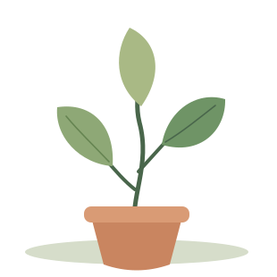
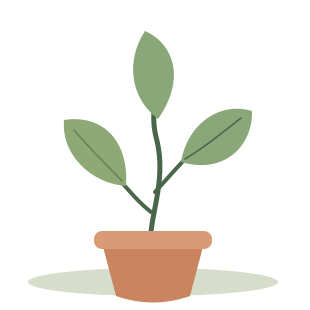

手机界面设计 · 固定示例交互
一件可以开始，
也能改变主意的小事。
低精力时，可以倾听、休息，或预览一件小事。愿意采纳后进入 Today，稍后回来仍能找回和撤回。
- 我的职责
- 参与门槛、微行动、休息和反馈规则及 AI 协作
- 使用场景
- 想恢复一点生活秩序，同时保留休息和拒绝的空间。
给今天的自己，留一点空间。
今天，想从哪开始？

一件普通的小事
找到那份文档
只找到文件入口，现在不用打开。
这一步已在今天。可以到“一小步”查看或撤回。
可以先不用解决
我在这里，听你说。
这一刻可以只是停留。你愿意行动时，再选择一小步。
倾听状态示意 · 此处使用固定文案
今天，也可以慢一点
先把时间留给自己。
没有倒计时，也不用补交任务。花园随时欢迎你回来。
按你的节奏来。
今天的一小步
还没有采纳事项
找到那份文档
只找到文件入口，现在不用打开。
预览好一件愿意尝试的小事，再决定。
今天已经做过。给自己一点温柔的回应。
采纳后才进入今天，完成由你亲自确认。
不用赶时间。
你的安静花园

找到那份文档
试着拆小、采纳、完成与撤回，也可以先休息。演示使用固定事项，状态仅保留在当前页面。
01 / 用户与问题
状态不好时，
“再完成一件事”也可能太难。
Hug 面向低精力、思绪混乱或难以开始日常小事的成年人。它探索三种不同需求：只想安静停留，愿意尝试一小步，或想自愿记录和回顾。用户不需要先给自己贴心理标签。这个需求划分是产品假设，尚未经过真实人群的持续使用验证。
- 最小任务
- 在当下能选择倾听、休息或一件可承担的小事，并清楚知道记录是否被保存。
- 优先约束
- 建议不能越权写入计划；拒绝、休息与撤销都必须有效。
- 产品阶段
- 移动网页原型；真实模型、可靠业务存储、真机与长期效果待验。
- 本人负责
- 场景与范围判断、微行动和休息规则、花园反馈、AI 协作与结果审阅。
02 / 产品判断
先问用户此刻要什么，
再决定要不要给建议。
安静花园可以零输入停留；Hug 根据用户意图保持倾听或给一条建议预览；只有用户明确采纳，事项才进入 Today。建议太难可继续拆小，拒绝后继续倾听，旧响应晚到也不应覆盖新的选择。休息不是失败，不用连续打卡证明自己。
体验关系示意，由文字排版生成；不是产品截图或治疗流程。
03 / 使用路径
从一句“我现在不想做”，
到由自己决定下一步。
- 01
表达或选择意图
可以只倾听、主动求建议，或直接去安静花园；不要求披露私密经历。
- 02
预览一小步
建议说明所需时间与条件，可逐级拆小；不合适就拒绝或休息。
- 03
确认后进入 Today
采纳才保存，能找回并撤销。花草给温和回应，但不以任务中断惩罚用户。
当前原型已验证固定示例的预览、拆小、拒绝与采纳等操作。它不能证明个性化模型质量或心理效果。
04 / 竞品与差异
成长反馈很有吸引力，
但要允许今天什么都不做。
Finch
官方流程支持创建、完成目标和获得成长反馈；值得学习行动与回应如何连接。
How We Feel
官方资料介绍情绪识别与回顾；值得比较记录之后的连续体验。
休息也成立
把安静停留、可拒绝的建议与采纳后保存连成一套规则，花园反馈不制造打卡压力。
这是一组设计选择，还不是已证明的领先能力。对比任务会包括“只想停留”“找一件能接受的小事”“几天后找回记录”；同时比较备忘录、通用聊天工具以及直接离屏休息。官方资料不足以断言竞品缺少某项能力。
05 / 内容与运营
内容要适合处境，
也要有退出方式。
24 张微行动卡是内容目标，当前仅有少量固定示例；首批四组处境、8 张草稿卡仍未完成专业审核。每张卡需写清适用条件、行动粒度、资源限制、拆小方法与拒绝出口。固定卡可先形成非 AI 使用路径，AI 是否更有价值，要用同场景的建议质量、成本和失败样本比较。
限定试用时按“只想停留、想行动、想记录”分组，不把停留时间当成统一成功指标。记录用户是否理解建议、主动采纳后能否找回、拒绝是否被遵守，以及内容过长、误解处境、丢失记录等坏案例；每次修订回到原样本复测。传播文案只描述已具备的能力。
06 / 边界与进度
有可操作的原型，
没有疗效结论。
原型中普通合成事项已经能预览、采纳、撤回，并在显式浏览器入口保存后刷新找回；8 张恢复场景卡仍为未审核草稿。正式存储、真实微信和真机、真实模型语义评测、专业内容审核与真实用户效果仍待验证。
Hug 是非临床的自我照顾产品，不承担诊断或治疗角色。心理学与行为科学资料用于设计候选方法，必须记录研究对象、适用范围与限制；虚拟花园的实际体验仍要单独观察，不从真实自然研究直接推断效果。
事实和方案分别标注；资料核对截至 2026 年 11 月 12 日。页面插画为作品集叙事画面，不代表产品实拍。